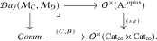
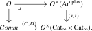
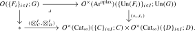
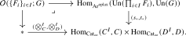

Day convolution is characterized by an internal-hom universal property in the \(\infty \)-category of \(\infty \)-operads. We take this universal property as our definition, then construct Day convolution operads for symmetric monoidal source and target.
Definition 16.1.1. Let \(\Oo \) and \(\Pp \) be \(\infty \)-operads. An \(\infty \)-operad \(\oDay (\Oo ,\Pp )\) is called a Day convolution operad for \(\Oo \) and \(\Pp \) if it comes equipped with a morphism of \(\infty \)-operads \[ \ev \colon \oDay (\Oo ,\Pp ) \times \Oo \to \Pp \] satisfying the following universal property: if \(\Qq \) is another \(\infty \)-operad, the composite \[ \hspace {-6pt} \Fun _{\Op _{\infty }}(\Qq ,\oDay (\Oo ,\Pp )) \xrightarrow {- \times \Oo } \Fun _{\Op _{\infty }}(\Qq \times \Oo , \oDay (\Oo ,\Pp ) \times \Oo ) \xrightarrow {\ev \circ -} \Fun _{\Op _{\infty }}(\Qq \times \Oo , \Pp ) \] is an equivalence. Informally, this means we have the following classification of operad morphisms into \(\oDay (\Oo ,\Pp )\): \[ \{\text {Operad morphisms $\Qq \to \oDay (\Oo ,\Pp )$}\} \quad \leftrightsquigarrow \quad \{\text {Operad morphisms $\Qq \times \Oo \to \Pp $}\}. \] Note that this property uniquely determines \(\oDay (\Oo ,\Pp )\) if it exists.
Remark 16.1.2. Let \(\Oo \) be an \(\infty \)-operad for which \(\oDay (\Oo ,\Pp )\) exists for all \(\Pp \). Then the functor \(- \times \Oo \colon \Op _{\infty } \to \Op _{\infty }\) admits a right adjoint \[ \oDay (\Oo ,-)\colon \Op _{\infty } \to \Op _{\infty }. \]
Whenever the relevant Day convolution operads exist, this internal-hom description is functorial in both variables. An operad map \(u\colon \Oo '\to \Oo \) induces by precomposition an operad map \[ u^*\colon \oDay (\Oo ,\Pp )\longrightarrow \oDay (\Oo ',\Pp ), \] and an operad map \(v\colon \Pp \to \Pp '\) induces by postcomposition an operad map \[ v_*\colon \oDay (\Oo ,\Pp )\longrightarrow \oDay (\Oo ,\Pp '). \] The first map is adjoint to evaluation after precomposition with \(\id \times u\), while the second is adjoint to postcomposition of evaluation with \(v\). Their functoriality follows from the universal property. The same universal property gives a natural exponential law \[ \oDay \bigl (\Oo ,\oDay (\Pp ,\Qq )\bigr ) \simeq \oDay (\Oo \times \Pp ,\Qq ). \] Indeed, maps from an \(\infty \)-operad \(\Rr \) into either side are naturally equivalent to maps \(\Rr \times \Oo \times \Pp \to \Qq \).
The universal property of \(\oDay (\Oo ,\Pp )\) allows us to deduce most of its basic structure. Let us first describe its underlying \(\infty \)-category.
Lemma 16.1.3. Assume \(\oDay (\Oo ,\Pp )\) exists. Then the underlying \(\infty \)-category of \(\oDay (\Oo ,\Pp )\) is the \(\infty \)-category of functors \(U(\Oo ) \to U(\Pp )\) between the underlying \(\infty \)-categories of \(\Oo \) and \(\Pp \): \[ U(\oDay (\Oo ,\Pp )) \quad \simeq \quad \Fun (U(\Oo ),U(\Pp )). \]
Proof. By Lemma 14.3.5, the universal property of Day convolution, and Lemma 14.3.8, we have natural equivalences \begin {align*} U(\oDay (\Oo ,\Pp )) &\simeq \Fun _{\Op _{\infty }}(\Triv ,\oDay (\Oo ,\Pp )) \\ &\simeq \Fun _{\Op _{\infty }}(\Triv \times \Oo ,\Pp ) \\ &\simeq \Fun _{\Op _{\infty }}(\Triv _{U(\Oo )},\Pp ) \\ &\simeq \Fun (U(\Oo ),U(\Pp )), \end {align*}
where the final equivalence is another instance of Lemma 14.3.5. □
As another consequence of the universal property, we may describe the commutative algebras in Day convolution operads:
Lemma 16.1.4. Assume \(\oDay (\Oo ,\Pp )\) exists. Then commutative algebras in \(\oDay (\Oo ,\Pp )\) correspond to operad morphisms \(\Oo \to \Pp \): \[ \CAlg (\oDay (\Oo ,\Pp )) \simeq \Fun _{\Op _{\infty }}(\Oo ,\Pp ). \]
Proof. Since \(\Comm \) is the terminal \(\infty \)-operad, we have \(\Oo \simeq \Comm \times \Oo \), and so \begin {align*} \CAlg (\oDay (\Oo ,\Pp )) &= \Fun _{\Op _{\infty }}(\Comm ,\oDay (\Oo ,\Pp )) \\ &\simeq \Fun _{\Op _{\infty }}(\Comm \times \Oo , \Pp ) \\ &\simeq \Fun _{\Op _{\infty }}(\Oo ,\Pp ). \qedhere \end {align*} □
We now construct \(\oDay (\Mm _C,\Mm _D)\) for symmetric monoidal \(\infty \)-categories \(C\) and \(D\), using the model of Hinich (2020) and its synthetic treatment by Winges (2026). By the preceding lemmas, its underlying category will be \(\Fun (C,D)\) and its commutative algebras will be the lax symmetric monoidal functors from \(C\) to \(D\).
All constructions below are understood in an ambient universe containing the symmetric monoidal \(\infty \)-categories under discussion. If \(C\) or \(D\) is large relative to the basic universe, we enlarge once as in Remark 1.8.1 and carry out the construction there. Further enlargement does not change the resulting Day convolution operad, since its universal property is expressed entirely in terms of the same \(\infty \)-operads and their mapping animae.
The main ingredient for this is an explicit description of the unstraightening of the functor \[ (\Cat _{\infty }^{\otimes })\catop \times \Cat _{\infty }^{\otimes } \to \Cat _{\infty }, \qquad (C,D) \mapsto \Fun ^{\otimes \text {-lax}}(C,D). \]
Definition 16.1.5. We denote by \[ \Ar ^{\oplax } \subseteq (\Cat _{\infty })_{/[1]} \] the full subcategory spanned by the cartesian fibrations \(E \to [1]\).
Thus \(\Ar ^{\oplax }\) has the same objects as the ordinary arrow category \(\Ar (\Cat _{\infty })\), but more morphisms. Under cartesian straightening, an object of \(\Ar ^{\oplax }\) corresponds to a functor \([1]\catop \to \Cat _{\infty }\). We write such a functor as \(F\colon C \to D\), with \(C\) as the fiber over \(1\) and \(D\) as the fiber over \(0\). Since the morphisms in \(\Ar ^{\oplax }\) do not need to preserve the cartesian edges, they correspond to laxly commutative squares of the form
Observe that \(\Ar ^{\oplax }\) is closed under finite products in \((\Cat _{\infty })_{/[1]}\), and that pulling back along the inclusions \(\{1\} \hookrightarrow [1]\) and \(\{0\} \hookrightarrow [1]\) provides a finite-product-preserving functor \[ (s,t)\colon \Ar ^{\oplax } \to \Cat _{\infty } \times \Cat _{\infty }. \]
Theorem 16.1.6 (Winges (2026), Theorem 2.7). Let \(\Oo \) be an \(\infty \)-operad, and consider the induced functor \[ (s,t)\colon \Mon _{\Oo }(\Ar ^{\oplax }) \to \Mon _{\Oo }(\Cat _{\infty }) \times \Mon _{\Oo }(\Cat _{\infty }). \] Then:
- (1)
-
The fiber over a pair \((C,D)\) of \(\Oo \)-monoidal \(\infty \)-categories is the \(\infty \)-category \(\Fun ^{\Oo \dlax }(C,D)\) of lax \(\Oo \)-monoidal functors \(C \to D\).
- (2)
-
For fixed \(C\), the restriction of \((s,t)\) to \(\{C\} \times \Mon _{\Oo }(\Cat _{\infty })\) is a cocartesian fibration classifying \[ \Fun ^{\Oo \dlax }(C,-) \colon \Mon _{\Oo }(\Cat _{\infty }) \to \Cat _{\infty }. \]
- (3)
-
For fixed \(D\), the restriction of \((s,t)\) to \(\Mon _{\Oo }(\Cat _{\infty }) \times \{D\}\) is a cartesian fibration classifying \[ \Fun ^{\Oo \dlax }(-,D) \colon \Mon _{\Oo }(\Cat _{\infty })\catop \to \Cat _{\infty }. \]
Remark 16.1.7. Winges in fact shows the stronger claim that this identification of the fibers is natural in both \(C\) and \(D\) simultaneously. Formulating this precisely requires the notion of orthofibrations, which are functors of the form \(E \to C \times D\) that correspond under a generalized form of straightening to functors \(C\catop \times D \to \Cat _{\infty }\). What Winges shows is that the functor \((s,t)\) from Theorem 16.1.6 is the orthofibration classifying the assignment \((C,D) \mapsto \Fun ^{\Oo \dlax }(C,D)\).
With this result at hand, we may now prove the explicit description of \(\oDay (\Mm _C,\Mm _D)\):
Theorem 16.1.8 (Hinich (2020), Proposition 2.8.9, Winges (2026), Theorem 1.1). Let \(C\) and \(D\) be symmetric monoidal \(\infty \)-categories, which we identify with commutative algebras in \(\Cat _{\infty }\) with the cartesian monoidal structure. Then the Day convolution operad \(\oDay (\Mm _C,\Mm _D)\) exists, and is given by the following pullback square:

Proof. Let us write \(\Dd \) for this pullback. We will show directly that \(\Dd \) satisfies the defining universal property of \(\oDay (\Mm _C,\Mm _D)\). It will suffice to produce for any \(\infty \)-operad \(\Pp \) a natural equivalence \[ \Fun _{\Op _{\infty }}(\Pp ,\Dd ) \simeq \Fun _{\Op _{\infty }}(\Pp \times \Mm _C, \Mm _D). \] For the left-hand side, note that \(\Fun _{\Op _{\infty }}(\Pp ,-)\) commutes with pullbacks. Since \(\Comm \) is the terminal \(\infty \)-operad, we have \(\Fun _{\Op _{\infty }}(\Pp ,\Comm ) \simeq *\). Since operad morphisms from \(\Pp \) into a cartesian operad correspond to \(\Pp \)-monoids by Theorem 15.3.11, we obtain equivalences \[ \hspace {-5pt} \Fun _{\Op _{\infty }}(\Pp ,\OpCart (\Ar ^{\oplax })) \simeq \Mon _{\Pp }(\Ar ^{\oplax }), \qquad \Fun _{\Op _{\infty }}(\Pp ,\OpCart (\Cat _{\infty } \times \Cat _{\infty })) \simeq \Mon _{\Pp }(\Cat _{\infty } \times \Cat _{\infty }). \] It follows that the \(\infty \)-category \(\Fun _{\Op _{\infty }}(\Pp ,\Dd )\) is equivalent to the fiber of the map \[ \Mon _{\Pp }(\Ar ^{\oplax }) \to \Mon _{\Pp }(\Cat _{\infty }) \times \Mon _{\Pp }(\Cat _{\infty }) \] over the pair \((C_{\Pp },D_{\Pp })\), where \(C_{\Pp }\) and \(D_{\Pp }\) are obtained from \(C\) and \(D\) by precomposition with the operad map \(p_{\Pp }\colon \Pp \to \Comm \). By Theorem 16.1.6, this fiber is the \(\infty \)-category \(\Fun ^{\Pp \dlax }(C_{\Pp },D_{\Pp }) = \Fun _{(\Op _{\infty })_{/\Pp }}(\Mm _{C_{\Pp }/\Pp }, \Mm _{D_{\Pp }/\Pp })\) of lax \(\Pp \)-monoidal functors \(C_{\Pp } \to D_{\Pp }\). By the definition of \(C_{\Pp }\) and \(D_{\Pp }\) we have \[ \Mm _{C_{\Pp }/\Pp } \simeq \Pp \times _{\Comm } \Mm _C \qquadtext { and } \Mm _{D_{\Pp }/\Pp } \simeq \Pp \times _{\Comm } \Mm _D, \] hence \[ \hspace {-6pt} \Fun _{(\Op _{\infty })_{/\Pp }}(\Mm _{C_{\Pp }/\Pp }, \Mm _{D_{\Pp }/\Pp }) \simeq \Fun _{(\Op _{\infty })_{/\Pp }}(\Pp \times _{\Comm } \Mm _C, \Pp \times _{\Comm } \Mm _D) \simeq \Fun _{\Op _{\infty }}(\Pp \times _{\Comm } \Mm _C, \Mm _D), \] where the second equivalence uses the universal property of pullbacks. Since \(\Comm \) is terminal, the fiber product \(\Pp \times _{\Comm }\Mm _C\) is the product \(\Pp \times \Mm _C\) in \(\Op _{\infty }\). This is what we wanted to show. □
Remark 16.1.9. The above description of \(\oDay (\Mm _C,\Mm _D)\) immediately generalizes to a description of the \(\Oo \)-monoidal Day convolution operad \(\oDay _{/\Oo }(\Mm _{C/\Oo }, \Mm _{D/\Oo }) \in (\Op _{\infty })_{/\Oo }\) for \(\Oo \)-monoidal \(\infty \)-categories \(C\) and \(D\). The proof is essentially identical, up to replacing \(\Op _{\infty }\) with \((\Op _{\infty })_{/\Oo }\) everywhere. It is this generality in which Hinich and Winges state and prove the result. Note that Theorem 16.1.6, the principal external input about Day convolution, is already stated for an arbitrary \(\infty \)-operad \(\Oo \).
Concretely, the universal property reads \[ \Fun _{(\Op _{\infty })_{/\Oo }}\bigl (\Qq , \oDay _{/\Oo }(\Mm _{C/\Oo },\Mm _{D/\Oo })\bigr ) \quad \simeq \quad \Fun _{(\Op _{\infty })_{/\Oo }}\bigl (\Qq \times _{\Oo } \Mm _{C/\Oo }, \Mm _{D/\Oo }\bigr ) \] for every \(\infty \)-operad \(\Qq \) over \(\Oo \). If \(C\) and \(D\) are symmetric monoidal and their \(\Oo \)-monoidal structures are obtained by restriction along \(\Oo \to \Comm \), associativity of pullbacks identifies \[ \Oo \times _{\Comm } \oDay (\Mm _C,\Mm _D) \quad \simeq \quad \oDay _{/\Oo }(\Mm _{C/\Oo },\Mm _{D/\Oo }). \] In other words, the underlying \(\Oo \)-monoidal \(\infty \)-category of the Day convolution is the \(\Oo \)-monoidal Day convolution. For \(\Oo =\Assoc \), this is the relative version underlying the final assertion of Observation 16.6.7, where the relevant functor is lax monoidal but not lax symmetric monoidal.
As a consequence of this result, we may explicitly compute the multimorphism animae of \(\oDay (\Mm _C,\Mm _D)\):
Proposition 16.1.10. Let \(C\) and \(D\) be symmetric monoidal \(\infty \)-categories, let \(I\) be a finite set, and let \(\{F_i\colon C \to D\}_{i \in I}\) and \(G\colon C \to D\) be functors. Then there is an equivalence \[ \oDay (\Mm _C,\Mm _D)(\{F_i\}_{i \in I}; G) \simeq \Nat \left ( \bigotimes _D^I \circ \prod _{i \in I} F_i, G \circ \bigotimes _C^I \right ) \] between the anima of multimorphisms \(\{F_i\}_{i \in I} \to G\) in the Day convolution operad and the anima of natural transformations \(\alpha \) fitting in the following diagram:
Proof. Let us write \(\Oo := \oDay (\Mm _C, \Mm _D)\) for simplicity. By definition, the anima of multimorphisms \(\Oo (\{F_i\}_{i \in I}; G)\) is the fiber of the projection map \[ p_{\Oo }\colon \Hom _{\Oo ^{\otimes }}(\{F_i\}_{i \in I}, G) \to \Hom _{\Span (\Fin )}(I, \lra {1}) \] over the active span \(I \xleftarrow {\;\id \;} I \to \lra {1}\). By Theorem 16.1.8, the \(\infty \)-operad \(\Oo \) sits in the following pullback square of \(\infty \)-operads:

Since hom animae in a pullback of \(\infty \)-categories form a pullback of animae, \(\Hom _{\Oo ^{\otimes }}(\{F_i\}_{i \in I}, G)\) is itself
the fiber in a pullback square of hom animae. Taking the fibers of these hom animae over the
active span \(I \to \lra {1}\), we find that \(\Oo (\{F_i\}_{i \in I}; G)\) is the fiber in the following pullback square of animae: \begin {equation*} 

By applying Theorem 16.1.6 to the trivial operad, we get that the functor \((s,t)\colon \Ar ^{\oplax } \to \Cat _{\infty } \times \Cat _{\infty }\) is a cartesian fibration over \(\Cat _{\infty } \times \{D\}\) and a cocartesian fibration over \(\{C\} \times \Cat _{\infty }\). The fibers of \((s,t)\) are given by the functor categories \(\Fun (C,D)\), with functoriality in \(C\) given by precomposition and functoriality in \(D\) given by postcomposition. The fiber of the upper-right hom anima over a pair \((f,g)\) is therefore the anima of natural transformations \(g\circ \prod _iF_i\to G\circ f\). In particular, (16.1) identifies the required fiber as \[ \Oo (\{F_i\}_{i \in I}; G) \simeq \Hom _{\Fun (C^I,D)}(\bigotimes _D^I \circ \prod _{i \in I} F_i, G \circ \bigotimes _C^I), \] as claimed. □